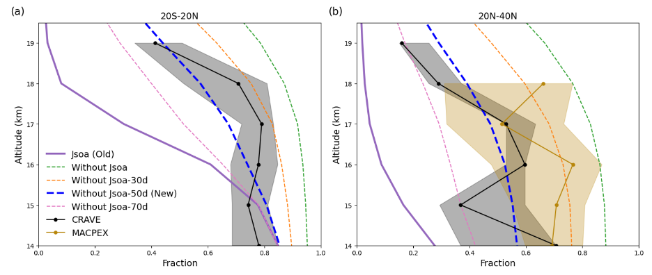

Organic aerosol (OA) is an important constituent of the Earth's atmosphere, yet whether and how quickly it is destroyed by photolysis remains an active research question. The stratosphere offers an ideal environment to study long-term OA photolysis: sources and sinks are relatively simple and well-characterised, and there is no confounding effect of rainout or complex tropospheric transport.
I use single-particle composition measurements from multiple NASA airborne campaigns (CRAVE, MACPEX, ATom, SABRE) together with aerosol extinction profiles from the OMPS Limb Profiler satellite to investigate OA evolution in the upper troposphere and lower stratosphere (UTLS). I then simulate these observations with two complementary CESM frameworks — CESM2-CARMA for the 2019/2020 Australian New Year wildfire case and CESM2-MAM for background OA.
Both field observations and model comparisons consistently show that long-term OA photolysis in the stratosphere is negligible. Fresh SOA photolyses rapidly, but the rate diminishes to near-zero as the aerosol ages — a process known as photobleaching. Based on these findings, I introduce an age-dependent photolysis scheme into CESM, turning off photolysis after ~50 days of air age, which substantially improves the model's representation of stratospheric OA abundance.